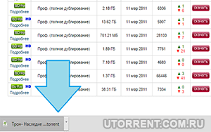
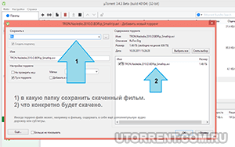
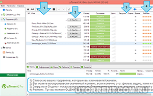

| Категория: | Торрнет-клиент | |
| Поддерживаемые ОС: | Windows XP | |
| Разрядность: | 32 bit, 64 bit, x32, x64 | |
| Для устройств: | Компьютер | |
| Язык интерфейса: | на Русском | |
| Версия: | Последняя | |
| Разработчик: | BitTorrent, Inc. |
Надо всего лишь загрузить uTorrent для Windows XP — это лидер среди аналогичных программ, предназначенных для распознавания, скачивания торрент-файлов. uTorrent является самой популярной программой в сфере обмена файлами из-за своего удобного интерфейса и быстрой загрузки. В ней имеется возможность не только скачивать файлы, но и раздавать их с ПК. Для того чтобы начать работу с утилитой, достаточно просто запустить файл установки. К тому же, утилита отличается достаточно приятным и удобным интерфейсом, который не требует каких-либо специальных знаний и умений от пользователя, что является большим преимуществом.
|  |  |  |
{kind=link}
{kind=link}
{kind=link}
uTorrent для Windows XP на компьютер
Windows XP — операционная система, которая в настоящий момент не поддерживается компанией Microsoft ввиду того, что признана устаревшей. Тем не менее, ее до сих пор иногда используют: например, она незаменима в ситуациях необходимости обслуживания слабого компьютера или ноутбука, на который невозможно установить более актуальную и современную версию программного обеспечения. Большинство давно существующих программ вполне «понимают» старую операционную систему, в их числе — отличное средство скачивания файлов из интернета путем использования торрент сетей, приложение uTorrent.
Скачивание, настройка и использование программы не вызывает никаких трудностей даже у неопытных пользователей. На самом деле, утилита обладает огромным количеством различных настроек, но большинство владельцев софта даже никогда в них не заглядывают, используя только самые основные — открытие соответствующих файлов с расширением torrent, скачивание, определение папки на диске, куда будут размещаться данные, а также последующая раздача, которая осуществляется автоматически — каждый качающий становится и раздающим.
uTorrent для версий windows:
Возможности и преимущества uTorrent
Скачивание торрентов
Настройки скачивания
Создание торрент файла
Планировщик загрузок
Скачать uTorrent для Windows XP бесплатно
| Приложение | OS | Распаковщик | Формат | Версия | Загрузка |
|---|---|---|---|---|---|
| uTorrent | Windows xp | OpenBox | x32 | Бесплатно (на русском) | |
| uTorrent | Windows xp | OpenBox | x64 | Бесплатно (на русском) | |
| uTorrent | Windows xp | OpenBox | x32 — x64 | Бесплатно (на русском) |
Как установить uTorrent для windows XP:
Запустите файл.
Ознакомьтесь с информацией и нажмите "Далее".
Нажмите "Далее", или снимите галочки с рекомендуемого ПО и нажмите "Далее". Если снять все галочки, рекомендуемое ПО не установится!
После всех шагов нажмите "Установить".
Программа отлично подойдет для того, чтобы скачать себе музыку, фильмы и другие видеофайлы, а также различные документы и приложения. Владельцу придется поискать в интернете соответствующие торрент-хранилища, где предлагаются «ярлыки» для передачи в рамках сетей P2P, но это довольно простая задача, которая не вызовет больших сложностей — главное, использовать более или менее известные ресурсы, чтобы минимизировать риск столкновения с троянами и вирусами.
С непривычки возможны небольшие сложности, но, если руки растут из правильного места
Торрент-клиент как раз для старенького Икспая!
установил клиент на XP-иху, на Руторе и Рутрекере тяну фильмецы